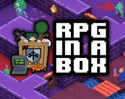
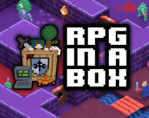

Since i was little i have been playing around with technology and since i was a pretty curious kid i started to wonder how does a computer function? So after i had aquired the bare minimum gear i began looking into Programming and i sarted my first little project and it was hard but after some googleling i got a functionle piece of code. While writing that piece of code i had a lot of fun tinkering with the css for that piece of code. At that moment i decided that I wanted to do something with coding cause why not make something that you have a lot of fun with and makes you happy into a job. So i satrted searching for Colleges that provided me with the knowlege that i so desired.
I have done something with coding before it was at secondaryschool the first and second year it was on a website called CodeCombat and there with the help of some cenarios they teach the basics of Javascript, HTML and CSS next to CodeComabt i have also used RPG in a Box as a hobby project and RPG in a box allows you to more easily create a pixle game. While doing all of that i really enjoyed doing it and wanted to make a career out of it.
 
